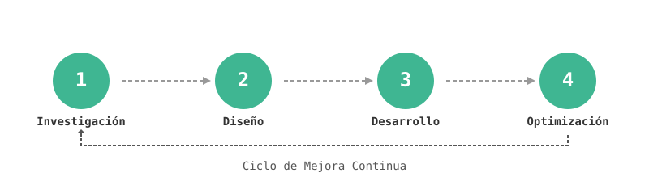

Agentes y Asistentes de IA
Asistentes de IA Personalizados
Bots conversacionales para soporte y automatización.
Inteligencia Documental
Extrae y analiza datos de documentos.
Integración con Base de Conocimiento
Respuestas impulsadas por IA desde tus recursos internos.
Agentes para Tareas Específicas
Automatiza reuniones, ingreso de datos e informes.
IA para Atención al Cliente
Soporte al cliente automatizado 24/7.
IA Multilingüe
Soluciones de IA en varios idiomas.
Integración de IA
Integración de Sistemas
Conecta la IA con tus herramientas existentes.
Automatización de Flujos
Automatiza procesos rutinarios de negocio.
Flujos de Datos
Flujos de datos confiables para aplicaciones de IA.
IA en la Nube
IA escalable en AWS, Azure o Google Cloud.
IA On-Premise
Implementaciones seguras y locales de IA.
IA Móvil
Funciones de IA para apps iOS y Android.
Estrategia de IA
Evaluación de Preparación
Evalúa tu potencial y necesidades de IA.
Análisis de ROI
Proyecta el valor de la IA para tu empresa.
IA Ética
Garantiza equidad, privacidad y cumplimiento.
Hoja de Ruta de Transformación
Plan paso a paso para la adopción de IA.
Formación en IA
Capacita a tu equipo para el éxito en IA.
Selección de Proveedores
Elige las mejores plataformas y socios de IA.
Capacidades Avanzadas de IA
Visión por Computadora
Analiza imágenes y videos para obtener insights.
IA de Voz y Habla
Reconocimiento de voz e interacción hablada.
Analítica Predictiva
Pronostica tendencias y resultados de negocio.
IA Generativa
Texto, imágenes y código generados por IA.
Sistemas de Recomendación
Sugerencias personalizadas para usuarios.
Modelos de IA Personalizados
IA adaptada a tus necesidades únicas.
Beneficios de Nuestras Soluciones de IA
- Aumenta la eficiencia operativa y automatiza tareas repetitivas
- Toma decisiones empresariales más inteligentes y basadas en datos
- Reduce costes y optimiza la asignación de recursos
- Acelera la innovación y el tiempo de lanzamiento al mercado
- Ofrece experiencias personalizadas a clientes a gran escala
- Obtén una ventaja competitiva con capacidades avanzadas de IA
Nuestro Proceso de Implementación de IA

1. Investigación y Evaluación
Analizamos las necesidades, recursos de datos y sistemas existentes para identificar las oportunidades de IA más valiosas para tu organización.
2. Diseño de la Solución
Creamos un plan detallado para tu solución de IA, incluyendo arquitectura, funcionalidades, puntos de integración y un cronograma claro de implementación.
3. Desarrollo e Integración
Desarrollamos e implementamos tu solución de IA, asegurando una integración perfecta con tus sistemas y flujos de trabajo para un máximo impacto.
4. Pruebas y Optimización
Probamos y refinamos rigurosamente tu solución de IA según el feedback y métricas de rendimiento para maximizar el valor y el ROI.
¿Listo para transformar tu negocio con IA?
Contacta a The Apps Garden para hablar sobre cómo nuestras soluciones de IA pueden abordar tus retos empresariales y desbloquear nuevas oportunidades.
team@theappsgarden.com